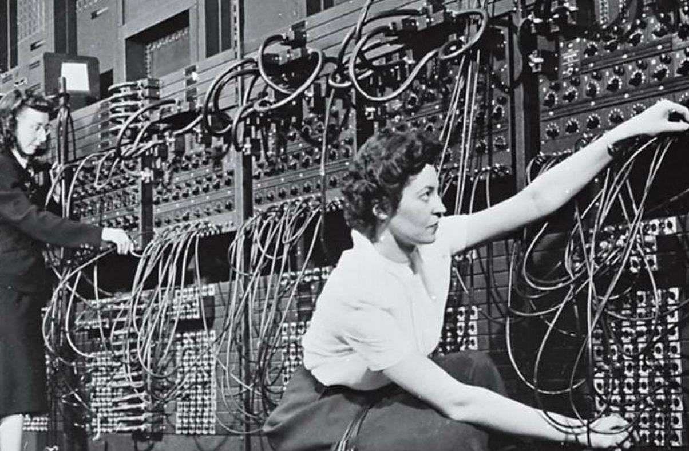

in early history: During 1842-1849, Ada Lovelace wrote the first computer program.

Ada Lovelace, was an English mathematician and writer,Ada Lovelace.
chiefly known for work on Charles Babbage's proposed mechanical
general-purpose computer, the analytical engine.
She was the first to recognise the machine had applications beyond pure
calculation. Lovelace is often considered the first computer programmer.
During 1842-1849 Ada Lovelace translated the memoir of italian mathematician, Luigi Menabrea